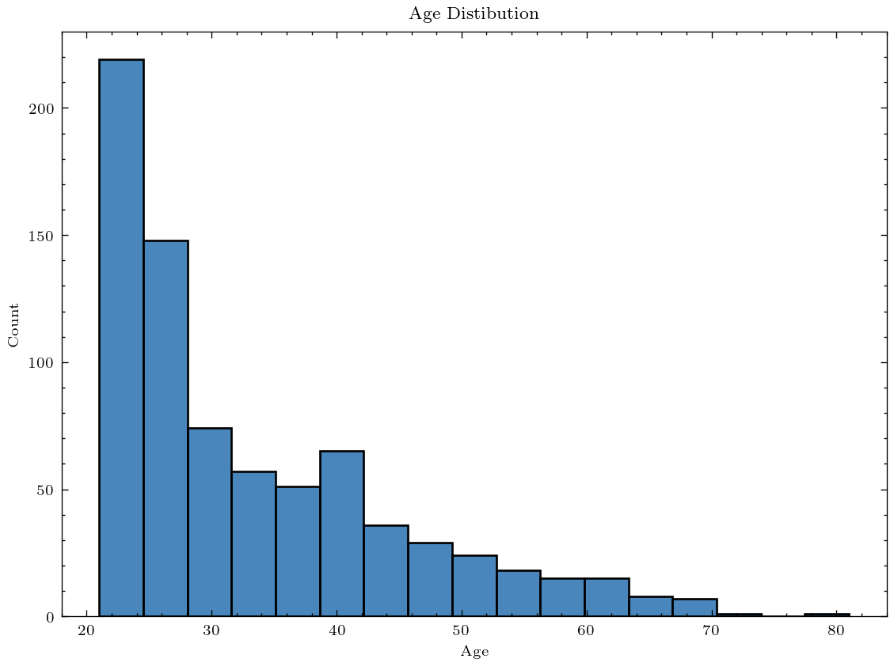
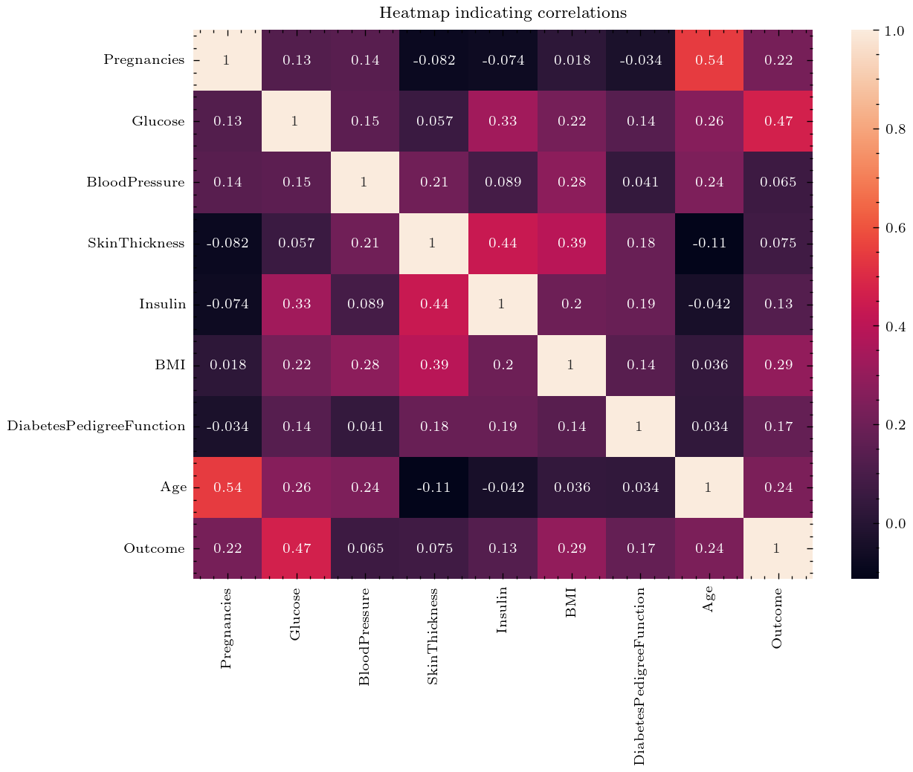
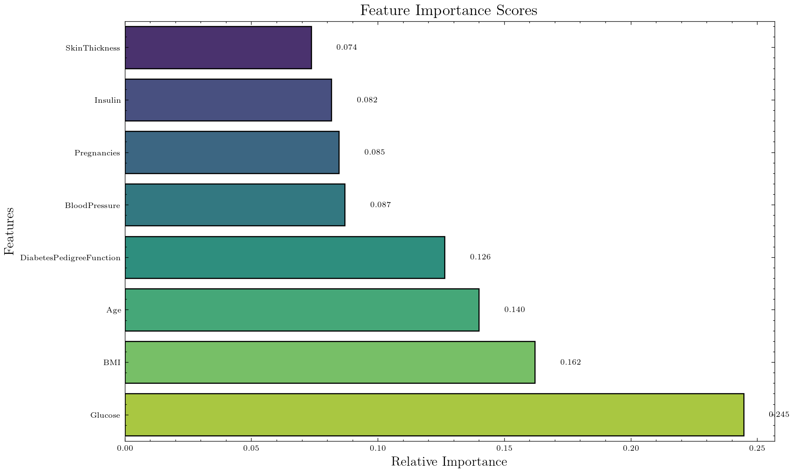
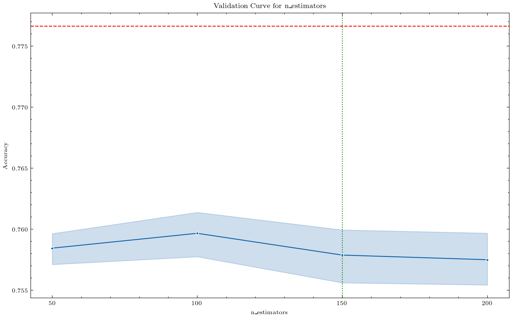
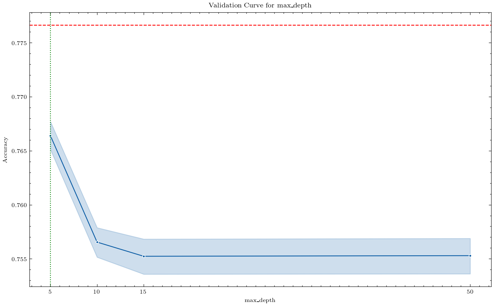
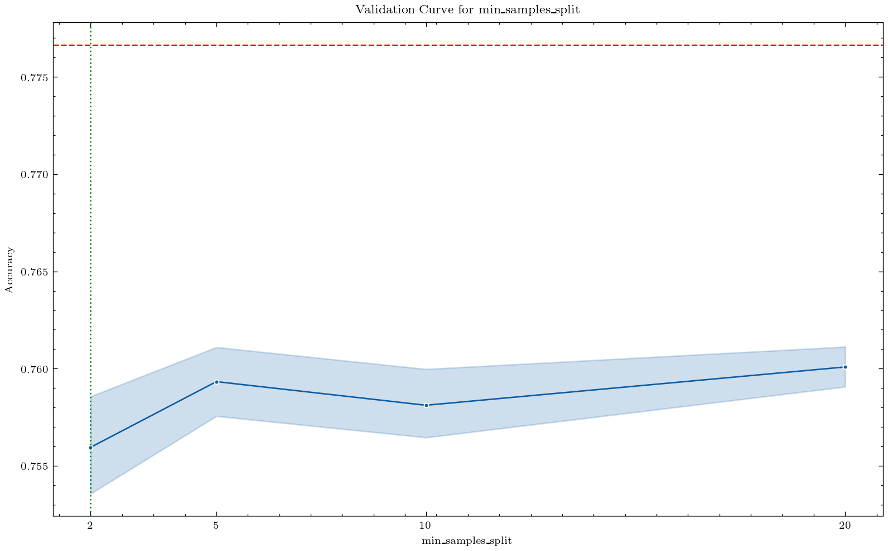

# Import data from Kaggle using RKaggle package
diabetes <- get_dataset('akshaydattatraykhare/diabetes-dataset')Diabetes Prediction Analysis
Objective:
Predict the onset of diabetes based on diagnostic measurements.
Dataset Description:
This dataset contains diagnostic measurements for 768 individuals.
The Outcome variable indicates whether the patient has diabetes (1) or not (0)
Import data:
Convert to python dataframe:
# Convert r dataframe to python dataframe using Reticulate package
diabetes = r.diabetesExploratory Data Analysis:
Information of dataset:
Pregnancies Glucose BloodPressure ... DiabetesPedigreeFunction Age Outcome
0 6.0 148.0 72.0 ... 0.627 50.0 1.0
1 1.0 85.0 66.0 ... 0.351 31.0 0.0
2 8.0 183.0 64.0 ... 0.672 32.0 1.0
3 1.0 89.0 66.0 ... 0.167 21.0 0.0
4 0.0 137.0 40.0 ... 2.288 33.0 1.0
[5 rows x 9 columns]<class 'pandas.core.frame.DataFrame'>
RangeIndex: 768 entries, 0 to 767
Data columns (total 9 columns):
# Column Non-Null Count Dtype
--- ------ -------------- -----
0 Pregnancies 768 non-null float64
1 Glucose 768 non-null float64
2 BloodPressure 768 non-null float64
3 SkinThickness 768 non-null float64
4 Insulin 768 non-null float64
5 BMI 768 non-null float64
6 DiabetesPedigreeFunction 768 non-null float64
7 Age 768 non-null float64
8 Outcome 768 non-null float64
dtypes: float64(9)
memory usage: 54.1 KBMissing values:
Pregnancies 0
Glucose 0
BloodPressure 0
SkinThickness 0
Insulin 0
BMI 0
DiabetesPedigreeFunction 0
Age 0
Outcome 0
dtype: int64No missing values observed in Table 1 for any of the columns.
Distribution of age:

The average age of the participants: 33 year's old

Split the data for Machine Learning:

The Accuracy score is: 73.16%Cross-validated accuracy: 74.61% (+/- 4.27%)Hyperparameter Tuning:
GridSearchCV(cv=5, estimator=RandomForestClassifier(random_state=123),
param_grid={'max_depth': [5, 10, 15, 50],
'min_samples_leaf': [1, 2, 4, 8],
'min_samples_split': [2, 5, 10, 20],
'n_estimators': [50, 100, 150, 200]},
scoring='accuracy', verbose=2)In a Jupyter environment, please rerun this cell to show the HTML representation or trust the notebook. On GitHub, the HTML representation is unable to render, please try loading this page with nbviewer.org.
GridSearchCV(cv=5, estimator=RandomForestClassifier(random_state=123),
param_grid={'max_depth': [5, 10, 15, 50],
'min_samples_leaf': [1, 2, 4, 8],
'min_samples_split': [2, 5, 10, 20],
'n_estimators': [50, 100, 150, 200]},
scoring='accuracy', verbose=2)RandomForestClassifier(max_depth=5, n_estimators=150, random_state=123)
RandomForestClassifier(max_depth=5, n_estimators=150, random_state=123)
Best parameters found: {'max_depth': 5, 'min_samples_leaf': 1, 'min_samples_split': 2, 'n_estimators': 150}Best cross-validation accuracy: 77.67%


Conclusion:
The feature importance plot highlights that Glucose, BMI, and Age are the most influential factors in predicting diabetes within this dataset.
In conclusion, this analysis provides insights into the diabetes dataset, identifies key predictive features and demostrates a machine learning workflow for predicting diabetes.
Future work:
Explore Other Machine Learning Models
Further Hyperparameter Tuning
Interpretability Analysis